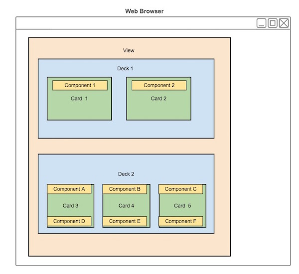

A view is the visual summary of the information that is displayed in a web application. Predix UI provides a repository that defines the layout of Predix UI components as a grid system of rows and columns in a card. A deck supplies simple one-dimensional layout control for cards and other components arranged in a specific order. This control can originate from the deck itself
Figure: View Service Overview
The View service stores the state and layout of card and deck objects in a database. The View service database also stores relationship information between card and deck objects.
As a developer, you can use the View service database to share and recreate saved cards, as well as send the context of a deck object (including cards and associated components) to render as a view in a web browser. This deck-based modular view framework gives an application user the flexibility to select a specific view at run time to grasp information intuitively and make time-critical decisions.